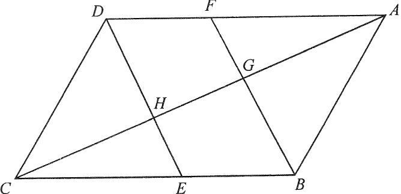

In the figure, $ABCD$ and $BEDF$ are parallelograms. $E$ is a point lying on $BC$ such that $BE:EC=2:3$. $AC$ cuts $BF$ and $DE$ at $G$ and $H$ respectively. If the area of $\triangle ABG$ is $135\text{ cm}^2$, then the area of the quadrilateral $DFGH$ is

Take $BE=2k$ and $EC=3k$, so
$$BC=BE+EC=2k+3k=5k .$$
Since $BEDF$ and $ABCD$ share the side $BC$, the base ratio is
$$\frac{BE}{BC}=\frac{2k}{5k}=\frac{2}{5}.$$
With $AD\parallel BC$ and $AF$ along $AD$, $CB$ along $BC$:
So $\triangle AFG \sim \triangle CBG$ (AAA), giving $\dfrac{AG}{CG}=\dfrac{AF}{CB}$.
In parallelogram $BEDF$: $FD=EB$ (opposite sides), so
$$AF=AD-FD=CB-EB=CE=3k .$$
Therefore
$$\frac{AF}{CB}=\frac{3k}{5k}=\frac{3}{5}\quad\Longrightarrow\quad \frac{AG}{CG}=\frac{3}{5}.$$
Hence $\dfrac{AG}{AC}=\dfrac{3}{3+5}=\dfrac{3}{8}$, i.e. $AC=\dfrac{8}{3}\,AG$.
$$\frac{[\triangle ABC]}{[\triangle ABG]}=\frac{AC}{AG}=\frac{8}{3}$$
$$[\triangle ABC]=135\times\frac{8}{3}=360\text{ cm}^2 .$$
A diagonal of a parallelogram bisects its area, so
$$[ABCD]=2\times[\triangle ABC]=720\text{ cm}^2 .$$
Parallelograms $ABCD$ and $BEDF$ share the same altitude between the parallel lines $AD$ and $BC$, so their areas are proportional to their bases $BC$ and $BE$:
$$\frac{[BEDF]}{[ABCD]}=\frac{BE}{BC}=\frac{2}{5}.$$
$$[BEDF]=720\times\frac{2}{5}=288\text{ cm}^2 .$$
The diagonal $DE$ (line through $H$) bisects parallelogram $BEDF$, splitting it into two congruent triangles $\triangle DEF$ and $\triangle DEB$ of equal area. Since $G,H$ lie on this diagonal, quadrilateral $DFGH$ and quadrilateral $BEHG$ are congruent, so
$$[DFGH]=[BEHG]=\frac{1}{2}[BEDF]=\frac{1}{2}\times 288=144\text{ cm}^2 .$$
Equivalently, letting $x=[DFGH]$: $[BEDF]=2x$, and
$$\frac{2x}{720}=\frac{2}{5}\quad\Longrightarrow\quad x=144 .$$